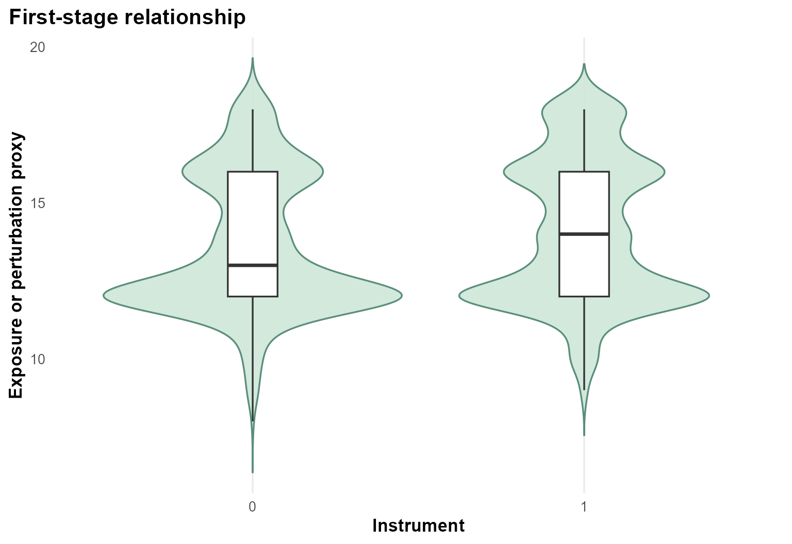
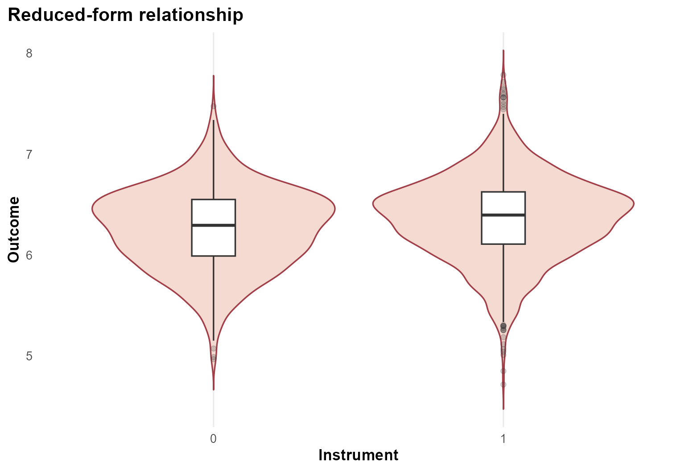
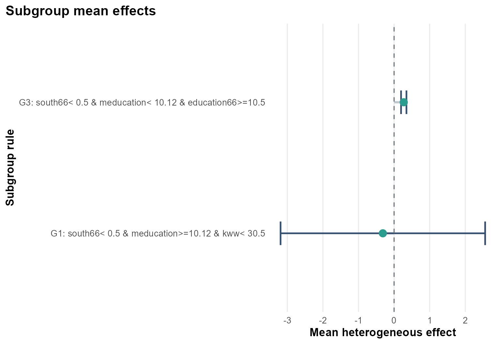
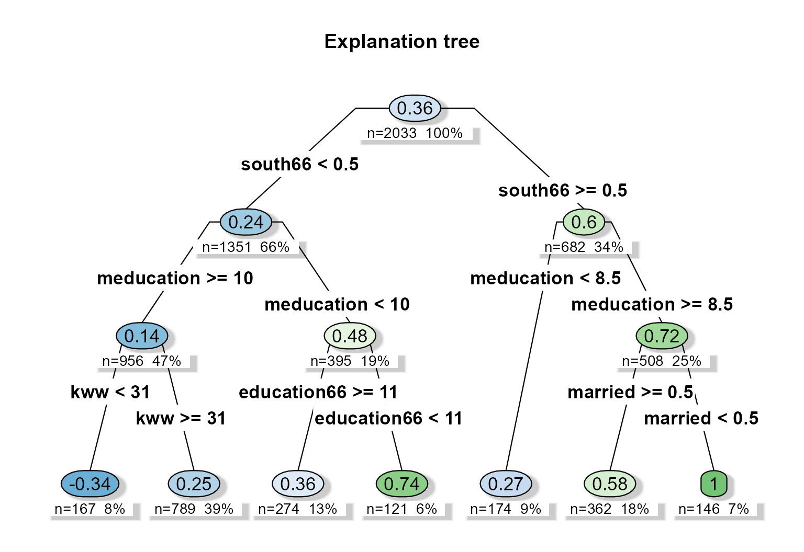
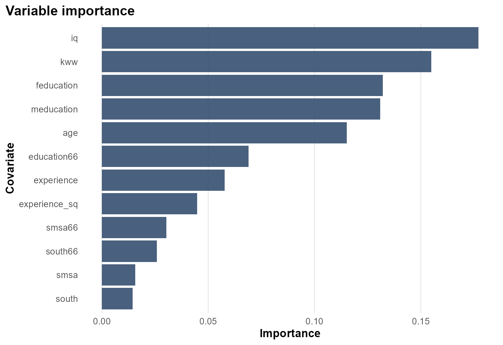

Case Study: SchoolingReturns
Source:vignettes/case-study-schooling-returns.Rmd
case-study-schooling-returns.RmdBackground
ivreg::SchoolingReturns is another returns-to-schooling
dataset with college proximity instruments and a richer collection of
baseline socioeconomic covariates than the simpler Card example.
Objective
The purpose of this tutorial is to show the same IV workflow on a higher dimensional baseline space. The estimand is the subgroup-specific local IV effect of education on log wages.
Analysis setup
dat <- prepare_case_schooling_returns()
fit <- fit_instrumental_forest(
data = dat,
outcome = "outcome",
treatment = "treatment",
instrument = "instrument",
covariates = setdiff(names(dat), c("sample_id", "outcome", "treatment", "instrument")),
sample_id = "sample_id",
seed = 123,
num_trees = 400,
tree_minbucket = 80
)
#> Warning in get_scores.instrumental_forest(forest, subset = subset,
#> debiasing.weights = debiasing.weights, : The instrument appears to be weak,
#> with some compliance scores as low as -0.1058
fit$check_table
#> check_name value status
#> 1 rows_used 2.033000e+03 info
#> 2 rows_dropped_missing 0.000000e+00 ok
#> 3 outcome_sd 4.177972e-01 ok
#> 4 treatment_sd 2.275749e+00 ok
#> 5 instrument_sd 4.551006e-01 ok
#> 6 cor_treatment_instrument 9.353879e-02 ok
#> 7 first_stage_f 1.792710e+01 ok
fit$subgroup_table
#> subgroup rule n effect_mean
#> 1 G1 south66< 0.5 & meducation>=10.12 & kww< 30.5 121 -0.3156606
#> 2 G3 south66< 0.5 & meducation< 10.12 & education66>=10.5 174 0.2716612
#> effect_low effect_high
#> 1 -3.1901339 2.558813
#> 2 0.1961033 0.347219Design view

The DAG is the same IV logic as in the Card example, but the baseline covariates now allow a more detailed heterogeneity decomposition.
First stage
plot_first_stage(fit)
The first-stage panel shows the instrument-exposure link at the analysis-table level.
Reduced form
plot_reduced_form(fit)
The reduced-form panel complements the first stage by showing the instrument-outcome relationship.
Heterogeneous effect summary

The subgroup plot suggests that local IV effects differ across baseline family education and cognitive-score profiles.
Explanation tree
plot_effect_tree(fit)
The explanation tree turns the forest predictions into readable rules. In this example, parental education, baseline schooling, and measured skill variables all contribute.
Variable importance

The importance ranking helps connect the tree back to the full forest fit.